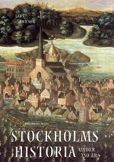

Södermalm i tid och rum. Stockholm

Ur Stockholms historia under 750 år, Lars Ericson, 2001 Häxprocesserna når Stockholm
Det i alla avseenden mörkaste kapitlet i historien om stockholmarnas trosföreställningar skrivs när vi
granskar i 67o-talets häxprocesser.
För många sentida betraktare framstår 1600-talets häxprocesser som själva kvintessensen av
vidskepelse, rättsövergrepp mot enskilda och fruktansvärda plågor som drabbade de utpekade
häxorna, i nästan samtliga fall kvinnor. Idag vet vi att häxtron och jakten på dessa, som man ansåg,
Djävulens anhängare som bedrev sin verksamhet mitt i kristna familjer och byar inte var fullt så
omfattande som det tidigare ansetts. Det hindrar inte att offren för hysterin kan räknas i tusental
runt om i Europa.
För de enskilda kvinnor, och enstaka män, som drabbades var självfallet fasorna och plågorna lika stora även om antalet olyckssystrar var mera begränsat än man tidigare trott. Inte sällan framtvingades bekännelser under tortyr och därefter väntade döden för de som dömdes, en död som i Sverige oftast innebar att den dömda inte placerades levande på bålet utan först avrättades innan kroppen brändes.
I de flesta fall är mönstret detsamma. Vittnen som inte sällan var små barn uppträdde inför häxdomstolarna och berättade hur de hade sett den anklagade resa till Blåkulla för att möta Djävulen. Inte sällan hade resan skett ridande på bakvända kor, eftersom allt som hade med Djävulen att göra var bakvänt jämfört med det normala, kristna livet. Även enskilda vuxna kunde framträda och berätta hur de hade använts som riddjur under någon mörk natt. Väl framme hos den Onde samlades hans anhängare till orgier av såväl backanalisk som sexuell natur, innan det var dags att resa hem. Väl tillbaka i vardagen kunde de återgå till sin normala skepnad, ibland utan att ens veta vad de hade varit med om. I Sverige grasserade häxprocesserna som värst under 1660- och 1670-talen med en koncentration till Dalarna och Hälsingland. Smittan spred sig också till rikets ytterområden, bl.a. till hälsingesoldater som var förlagda i den svenska armégarnisonen i Nyen skans vid Nevans strand, den plats där den nya ryska huvudstaden S:t Petersburg skulle byggas ett kvarts sekel senare. Totalt krävde den svenska häxhysterin runt 300 liv innan myndigheterna lyckades få stopp på den.
För den utpekade kunde det vara svårt, för att inte säga omöjligt, att freda sig och bevisa sin oskuld. En kvinna som var vacker kunde pekas ut, men även en som hade utseendet emot sig. På samma sätt kunde såväl den som uppfyllde alla krav på ett dygderikt leverne som en mera lösaktig kvinna falla offer för anklagelser och deras beteende av omgivningen tolkas som bevis på skuld. Ett vanligt test var vattenprovet, som innebar att en kvinna kastades i vattnet och ansågs som överbevisad om att vara häxa ifall hon flöt. Problemet var bara att endast om hon sjönk och drunknade ansågs hon vara oskyldig. Inte sällan förekom det att myndigheterna använde tortyr för att få en utpekad häxa att erkänna. Om hon gjorde så, var skuldfrågan klar, men om en kvinna mot förmodan lyckades stå ut med smärtan och vägrade erkänna, då ansågs det att hon hade fått hjälp av Djävulen och därmed var skulden lika klar. Tortyroffren kunde också lätt fås att peka ut andra häxor och därmed spred sig präriebranden vidare.
Inte heller Stockholm skonades från denna andliga farsot, tvärtom drabbades huvudstaden av ett av de värsta utbrotten i vårt land. Det var en period som kännetecknas av den lutherska ortodoxins kanske tyngsta hand över själarna såväl i staden som i resten av landet, samtidigt som allsköns vidskepelse grasserade fritt. Upplysningen var ännu avlägsen. Ännu trodde man på Martin Luthers ord om att "djävlarna äro runt omkring dig, de flyga i vädret såsom kajor och kråkor och skjuta och kasta utan återvändo efter oss". Reformatorns ord var tryckta i huspostillan, en av de få böcker som snart sagt varje vuxen svensk man och kvinna kom i kontakt med. Hotet från Djävulen och hans anhang i form av smådjävlar och förvända människor, dvs. kvinnliga och manliga häxor, upplevdes som konkret och utbrett. Teologiska beräkningar hade gett vid handen att smådjävlarnas antal på jorden uppgick till 3 triljoner 665 biljoner 366 miljoner.
Det var en i alla avseenden mörk tid. Författaren och Stockholmskännaren Per Anders Fogelström har på ett illustrativt sätt beskrivit hur den miljö gestaltade sig på 1670-talet där häxtron kunde bryta ut i full blom:
Stormaktstidens Stockholm är en mörk stad i både bildlig och bokstavlig bemärkelse. Vidskepelsen är allmän och mörkret är stort. Det finns ingen gatubelysning, bara en och annan lykta som svänger i vinden utanför någon av de många krogarna. Sedan vårdklockans slag förklingat kommer tystnaden, endast avbruten av stadsvaktens tunga steg och skrålet från de berusade som vacklar hemåt. Det finns inga lampor eller ljus heller i de enklare husen, men man kan förstås tända ett bloss eller samlas vid spisen.
Till denna stad kom år 1673 den elvaårige Gävlepojken Johan Johansson Griis för att bo hos en släkting, hökaren (småhandlaren) Johan Johansson Lind vid nuvarande Åsögatan. Andra släktingar bodde vid Folkunga- och Götgatorna. Gävlepojken visade sig ha en något oväntat talang, han kunde nämligen berätta för sina nya vänner bland Stockholmsbarnen om livet vid Blåkulla "som om han vore barnfödd där" Snart spred sig berättelserna bland kåkar och stugor kring den nästan färdigbyggda Katarina kyrka.
Centrum för den stockholmska vidskepelsen blev Mosebacke. Här spred sig Gävlepojkens berättelser som ringar på vattnet, med god hjälp av yngre kamrater. Uppenbarligen fanns det en hel del personliga motsättningar som nu blommade upp till ytan och en del Söderbor passade på att göra upp gamla räkningar på ett fruktansvärt sätt. Efterhand som alltfler barn började berätta om hur de nattetid hade förts av häxorna till Blåkulla, började deras oroliga föräldrar inrätta vakstugor runt Mosebacke. I dessa samlades barnen på nätterna, för att hållas under uppsikt. Men effekten blev den rakt motsatta mot den förväntade. I den här miljön kunde berättelserna frodas och broderas ut, eftersom barnen kunde hetsa varandra till den ena mera fantastiska skildringen efter den andra. Problemet var bara att deras ord togs för sanning av många vuxna.
Flera finska och tyska kvinnor var inblandade, både som offer och som åklagare. Den största koncentrationen av offer möter vi i kvarteren där Kocks-, Södermanna-, Åsö- och Östgötagatorna möttes. När en stor mängd anklagelser hade uttalats började myndigheterna agera, till en början ganska motvilligt. Det var kämnärsrätten i Södra stadshuset (nuvarande Stadsmuseum vid Slussen) som i egenskap av Söderbornas egen domstol fick ta den första stöten våren 1675. På hösten hade det hela tagit sådana proportioner att en särskild domstol inrättades under ledning av borgmästare Thegner stödd av ett antal rådmän och prästerna i konsistoriet. Denna häxdomstol sammanträdde mitt i centrum för epidemin, i Katarina kyrka mellan den 16 oktober 1675 och den 31 januari 1676. Men sedan ett antal oroliga och olyckliga föräldrar i början av mars 1676 skrivit till Svea hovrätt och bett domstolen att skydda deras barn, som varje natt "genom Satans instrumenter och häxor bliva till Blåkulla förda" måste själva hovrätten resolut gripa in.
I denna petition möter vi namn som ryttmästaren Gråå, hökaren Hindrich Abrahamsson och klockaren Erik Simonsson, samtliga tre framträdande företrädare för den grupp vuxna som tog barnens berättelser på allvar och villigt spred ryktena vidare. Några dagar senare kom ett andra brev, undertecknat av 48 föräldrar. Nu reagerade kungen, Karl Xl, och uppmanade hovrätten att agera.
De första förhören i "trollrannsakningen" hölls den 11 april 1676 med en Christian Sessmans hustru, mössmakerskan Anna Månsdotter, som gick under öknamnet "Vipp-upp-med-näsan". Till en början klarade sig Anna bra och fick stöd av flera vittnesmål. Hon hade dock kallat kyrkoherde Pontinus i Jacobs kyrka för "den halte djävulen" och mot anklagelserna om att känna en av de andra utpekade häxorna försvarade sig Anna med att denna kvinna var en god kristen. Istället berättade hon hur en annan kvinna, ryttmästaren Gråås hustru, lärt sina barn skrika skällsord och spotta efter Anna.
Men detta hjälpte inte, snart snärjdes hon alltmer av förhörsledarnas frågor och de alltmer fantastiska vittnesmålen av barn och vuxna. Inför domstolens ögon skapades en bild av Anna Månsdotters liv i Blåkulla. På en ko, en häst eller ibland en annan kvinna for hon till kyrkklockor för att skava av en del av den invigda malmen. Därefter for hon vidare till Blåkulla, där hon serverade mat och dansade med den Onde, innan hon låg med honom under bordet. De småflickor som Anna hade tagit med sig till Blåkulla piskade hon med flätade ormar.
Vid nästa rannsakning, den 17 april, fick Anna sällskap av Britta och Anna Sippela, döttrar till den tyskfödde bollmästaren och föreståndaren för Bollhuset vid Slottsbäcken, Georg Sippel. Britta hade en stor röd fläck på huden, något som var extra graverande eftersom barnen i vittnesbåset hade berättat hur den Onde hade slagit henne med klubba och ris. Anklagelser och motanklagelser korsade luften. Till och med Britta Sippelas två egna döttrar, 6 och 15 år gamla, vittnade mot mamman. I det läget tycks mamma Britta ha vacklat under trycket och utbrustit om den ena dottern: "Gud bättre, hon är som de andra barnen".
Den 24 april 1676 föll domen över Anna Månsdotter och Britta Sippela. De skulle halshuggas och sedan brännas på bål. Anna avrättades redan två dagar senare och efter ytterligare några dagar fick hon sällskap av Britta. Nu gick proppen ur tunnan och flera kvinnor överbevisades om häxeri. Hysterin grep omkring sig och ett par kvinnor anmälde sig själva som häxor. Den ena avrättades redan den 12 maj. Dagen efter höll Svea hovrätt sitt sista sammanträde. Därefter övertog en särskild rannsakningsdomstol ansvaret. Efter sig lämnade hovrätten totalt sex avrättade medan ytterligare en anklagad kvinna hade tagit livet av sig.
I Södra stadshuset sammanträdde tolv män, sex präster och sex världsliga, för att hantera detta alltmer akuta problem. En av de mest framträdande ledamöterna var den unge läkaren Urban Hjärne. Rannsakningsdomstolen trampade till en början vidare allt djupare i de tidigare hjulspåren. Den 24 juli avkunnades dess första dödsdomar, över Rumpare-Malin från Mariaberget och Tysk-Annika från Högbergsgatan. Malin orsakade ledamöterna en del huvudbry då man diskuterade vilket straff hon skulle få. Men till slut enades man om att hon skulle brännas levande. Urban Hjärne hade dock velat "lindra" straffet genom att först bränna henne med glödande tänger, så att hon skulle vara så avsvimmad att hon inte hann känna elden när bålet tändes. Han fick inget gensvar från kollegerna och istället ger stadens räkenskaper en korthuggen men mycket talande vittnesbörd om Malins öde. I dem noterades utgifter för bräder, näver, tomma tjärtunnor och krut som använts till bålet. Krutet utgjorde det enda "humanitära" inslaget, i form av en påse som bands kring halsen på den dömda för att, eventuellt, kunna explodera och förkorta dödskampen och lidandet något.
Den 5 augusti avrättades Malin och Annika. Annika var andäktig och sjöng, men Malin vägrade att ta sina döttrar, som hade vittnat emot mamman, i hand till avsked. Hon sade också emot prästerna vid bålet innan hon "stigandes friskt upp på bålet".
Men med dessa hemska händelser var kulmen nära. Under ett förhör den 11 september bröt en 15-årig stadsvaktsdotter, Annika Thomsdotter, samman och erkände att hon, trots tidigare vittnesmål om detta, aldrig varit i Blåkulla utan tvingats säga så av andra barn och vuxna. Snabbt kallades flera vittnen fram och snart hade ytterligare nio barn erkänt att de hade hittat på allting.
Domstolen valde i det läget att fortsätta dagens förhandlingar trots att tiden passerat tolv och man egentligen skulle vara klara. Ett par av vittnena var dock hårdföra, varför de båda "myrorna" helt sonika placerades i rådhusets fängelsekällare medan ett annat vittne pressades av undersökningsdomarna. Nu brast allt, och även de återstående vittnena föll till föga och skyllde på Gävlepojken och ett antal andra barn som de drivande. Visserligen vacklade en del vittnen fram och tillbaka, och i minst ett fall försökte föräldrarna besöka ett av de minderåriga vittnena i fängelsekällaren för att förmå henne att stå fast vid sitt ursprungliga vittnesmål.
Men inget kunde nu hejda utvecklingen. Mellan den 19 och 27 september släpptes de första av de häxanklagade ut ur fängelsehålan. Den otålige Urban Hjärne drev på, trots att ett par ledamöter av rätten var tveksamma till att släppa ut alla fängslade. Hjärne kommenterade frankt: "Den som nu tvivlar, han tvivlar till evig tid'. I november släpptes de sista häxanklagade upp i dagsljuset.
Nu var det istället de falska anklagarna som hamnade bakom lås och bom. Bland dem var det flera som hade mycket på sitt samvete och inte kunde freda sig med att de bara hade dragits med i ryktesfloden mot sin vilja.
En av dem var pojken Melcher Olsson. Han hade gått runt till skräckslagna och förtvivlade föräldrar och försäkrat dem, att han mot betalning kunde återfå deras barns namn som fanns inskrivna med blod hos Djävulen. Han hade nämligen själv förpantat namnen. Sedan Melcher fått pengar av de aktuella föräldrarna gick han till Liljeholmen, stal en höna och skrev sedan barnens namn med blod på lappar som han gav till föräldrarna. Dessa trodde därmed att de hade lyckats slita loss sina arma barn ur Djävulens klor. Melcher Olssons raffinerade utpressning vittnar verkligen om hur djup vidskepelsen, men också desperationen, var hos föräldrarna i kvarteren runt Katarina och Mosebacke detta hemska år 1676. Melcher dömdes till att löpa gatlopp mellan spöbeväpnade soldater som alla skulle slå på honom. Det krävdes en god fysik för att man skulle överleva ett sådant straff. Tyvärr vet vi inte hur det gick för den unge, hänsynslöse utpressaren Melcher.
Nu var jakten på inblandade i härvan av dödligt falska anklagelser i full gång. De båda stadsvakterna Per Näsvis och Per Tistel rörde sig hela tiden på Söders berg för att fånga in personer till förhör i Södra stadshuset.
Den förste som fångades in och straffades var den nu tolvårige Johan Johansson Griis. Eftersom han förutom de falska anklagelserna även erkände egna trolldomssynder gavs det ingen nåd för honom. Trots sin låga ålder dömdes och avrättades Johan. Fyra flickor dömdes att piskas med ris på fyra eller fem offentliga torg, sedan de först stått bundna vid en påle fem dagar vid varje torg som skamstraff. Andra släpptes efter att ett antal dagar ha försmäktat i fängelsekällaren, medan andra åter dömdes till böter.
Många stockholmare var dock inte övertygade om att inga häxor hade funnits, tvärtom kastade åskådare på Ladugårdslandstorg sten och snöbollar på de män som piskade de dömda kvinnorna. För en av de dömda kvinnorna, Anna Persdotter Galle, blev straffet för mycket och en kort tid före jul avled hon i fängelset av sviterna efter spörappen, dock först sedan hon avlagt "en vacker och ångerfull syndabekännelse".
En lång diskussion bröt ut i rätten om Lisbet Carlsdotter, en av de mest aktiva flickorna. Den 11 december argumenterade en av undersökningsdomarna för ett hårt straff: "Såsom Guds heliga namns fasliga försmäderska, såsom en mörderska, såsom en menederska, såsom en vederstygglig lögnerska och såsom många enfaldiga barnasjälars fördärverska" borde hon straffas med döden.
Lisbet fick sällskap av ytterligare två pigor. Den 20 december 1676 avrättades alla tre på Hötorget. Lisbets mamma anhöll om att få ta hand om dotterns lik och begrava henne som om hon hade dött en vanlig död och inte blivit avrättad. Medan myndigheterna funderade på hennes begäran gjorde modern själv slag i saken och såg, med hjälp av kaplanen eller hjälpprästen Myriander i Katarina, till att begrava dottern med krans på huvudet, en pärlkrona på kistan och ett liktal som hedrade hennes minne. Rannsakningsdomstolen kände sig förolämpad av moderns agerande och straffade den inblandade kaplanen och en klockare med böter och en del restriktioner. Lisbet Carlsdotter fick dock vila i frid i sin grav på Katarina kyrkogård.